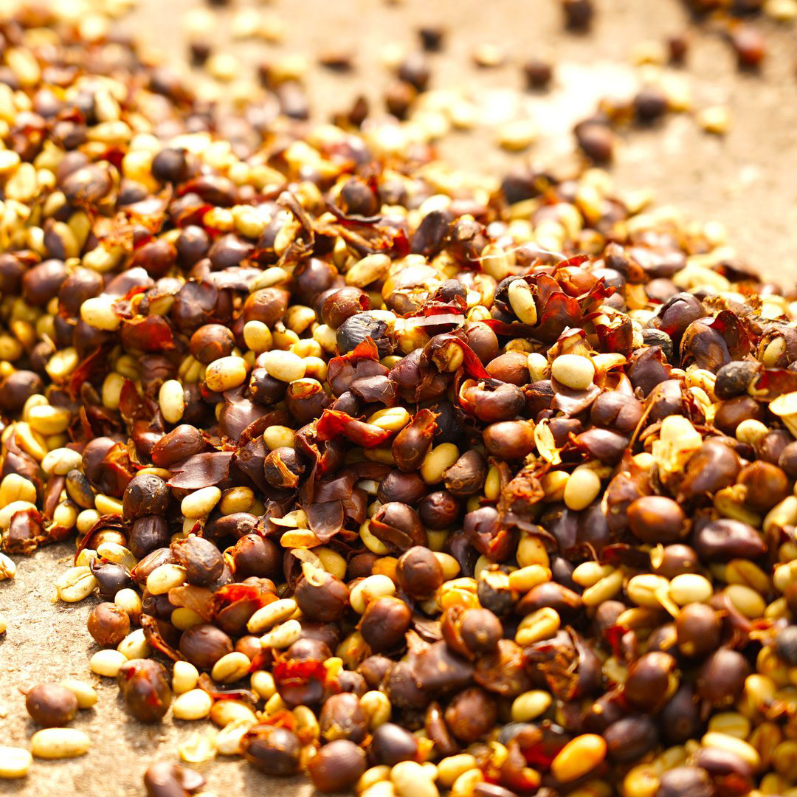
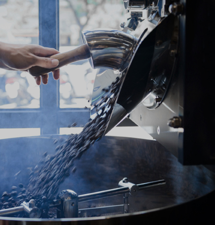
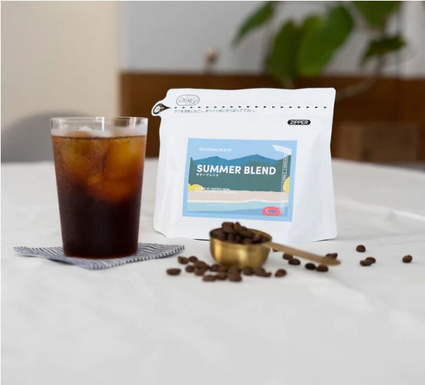

首頁>關於我們
提供讓您印象深刻的咖啡體驗
氼 COFFEE一直以來堅持「From Seed to Cup」的理念， 我們深知一杯咖啡產生的背後是無數人們的努力以及熱情投入， 所以我們不僅深刻理解從產地到所有與咖啡相關的人事物， 並承擔起作為將咖啡傳遞到顧客們手中的最後一環的責任， 秉持著這樣的理念向前，將這份精神傳達給所有的人
氼 COFFEE 為咖啡豆的專賣店。 秉持著穩定性與來源的可追溯性， 我們親訪莊園進行生豆的採購，並想像著顧客飲用時入口的瞬間感受 ， 對於咖啡豆的品質進行了嚴格的篩選與控管，另外無論烘焙的技術多麼出色， 如果生豆有瑕疵也無法成為美味的咖啡。因此選用品質優異的生豆， 無疑是一杯美味咖啡誕生的前提，也是我們的堅持
咖啡豆根據其生長環境和照料方式（例如品種、海拔高度和生產加工） 而具有不同的特性，為了最大限度地發揮咖啡豆的魅力， 氼 COFFEE在烘焙過程中時刻做調整，讓咖啡風味達到酸味和甜味之間的平衡。
 
